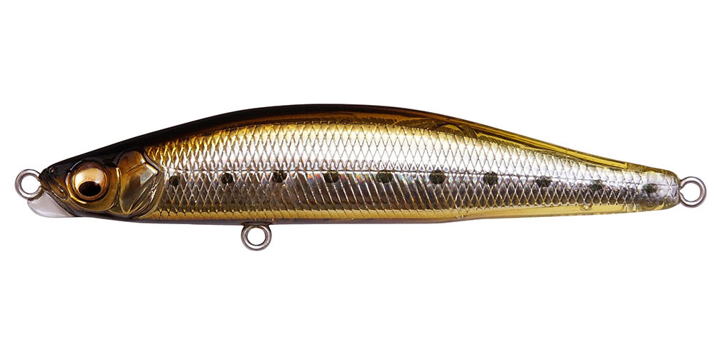
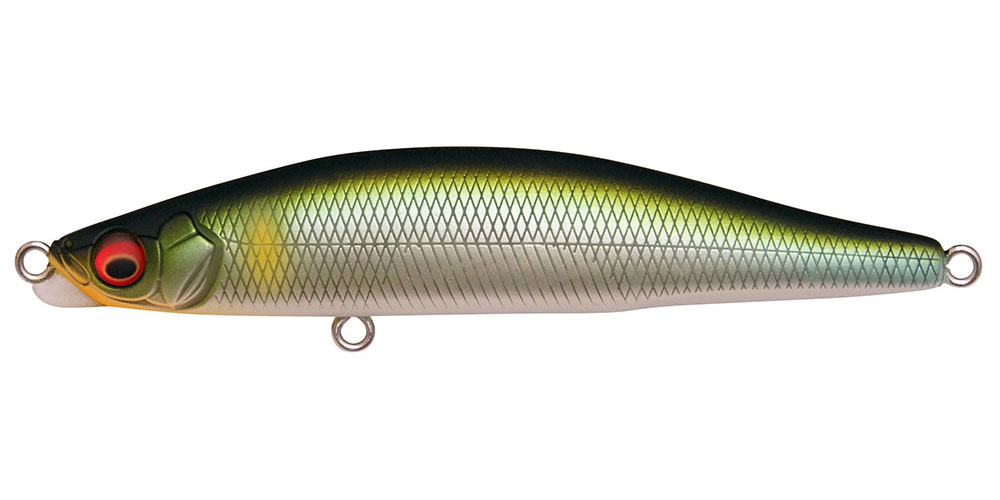
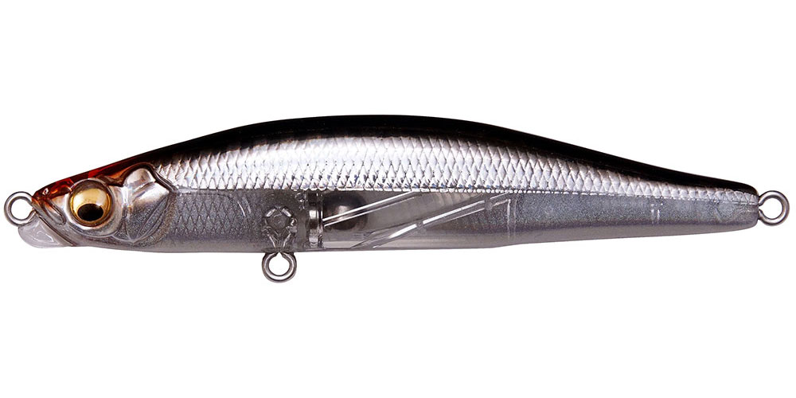
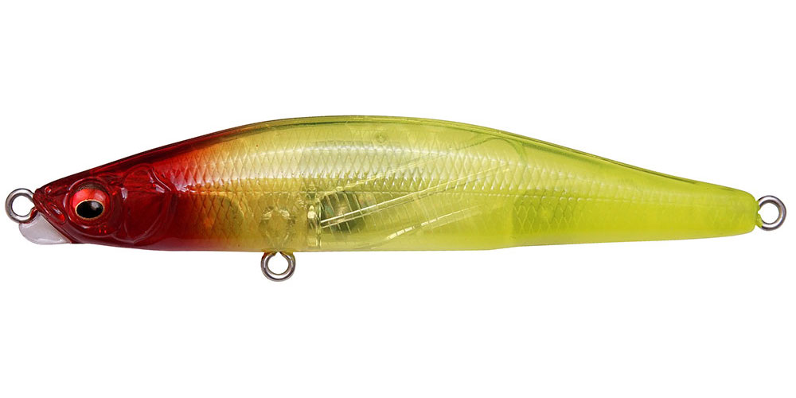

ゲンマ85S
（GENMA 85S）
ゲンマ85SはMegabass（メガバス）のシンキングペンシルです。
ランカーハンター久保田剛之プロデュースのゲンマシリーズで、食わせの釣りをさらに細分化した85mmモデル。シーズン初期やベイエリア・河川・運河などの小場所、稚鮎・ハク・カタクチなど小さなベイトに偏食している状況に合わせて作られています。

画像出典:Megabass公式HP
スペック
- メーカー
- Megabass（メガバス）
- タイプ
- シンキングペンシル
- 全長
- 85mm
- 自重
- 13g／17g
- フック
- #6×2
- テクノロジー
- SWIMMING KEEL（PAT.P）・重心移動
- ターゲット
- シーバス
- 価格
- 2,050円（税別）
▼今すぐチェック

ゲンマ85Sの特徴
小型ベイトパターンを、スイミングキールと2つのウェイトで攻略
-
頭部前面のスイミングプレート
ゲンマシリーズ最大の特徴であるSWIMMING KEEL（PAT.P）で、アクションの素早い始動性・スイム時の安定性・加減がつかみやすい適度な抵抗感を実現しています。
-
小さくてもよく飛ぶ重心移動
独自の重心移動システムを搭載し、85mmでも遠投性能が高く、飛距離とアクションの立ち上がりを両立しています。
-
用途で選べる2つのウェイト
13gは流れや潮に乗せた揺らぎアクションで、警戒心の強い魚を一撃。17gは飛距離や着底感度、レンジコントロールに優れたモデルです。
ゲンマ85Sの使い方
基本はスローのただ巻き。13gは流れに乗せてドリフトさせ、揺らぎアクションで食わせるのがおすすめです。
17gは遠投して、カウントダウンでレンジを刻みながら探ったり、ボトム付近をゆっくり引いたりと、レンジを意識した使い方に向いています。
ゲンマ85Sの得意な状況
シーズン初期、ベイエリア・河川・運河などの小場所。稚鮎・ハク・カタクチなど小型のベイトに偏食していて、大きいルアーに反応しないときに向いています。
ワンポイント
流れに乗せて食わせたいときは13g、飛距離や底を取りたいときは17gと、同じ85Sでもウェイトで使い分けましょう。
ゲンマシリーズの使い分け
| モデル | 全長／自重 | 得意な場面 |
|---|---|---|
| ゲンマ85S | 85mm／13g・17g | 小型ベイトや港湾・河川・運河の小場所に（本記事のモデル） |
| ゲンマ110S | 110mm／21g・29g | 状況を問わず使えるバーサタイルモデル |
| ゲンマスリム120S | 120mm／19.5g | 細身のベイトやバチに。ジグミノー並みの飛距離 |
どのモデルも頭部前面のスイミングプレート「SWIMMING KEEL（PAT.P）」を搭載しています。ベイトの大きさと形、届かせたい距離で選びましょう。
人気カラー
公式ラインナップから4色を紹介します（カラー名は公式の表記のまま）。

GG STAIN IWASHIステイン系のイワシカラー。カタクチなど小型のイワシがいるときに。

OBORO AYU稚鮎や落ちアユを意識したカラー。河川のアユパターンに。

HT NAMINOHANA「波の花」をイメージした個性的なカラー。定番色に反応がないときのローテーションに。

YELLOW VENUS RED HEADイエロー系にレッドヘッド。濁りやナイトゲームで見せたいときに。
画像出典:Megabass公式HP
ゲンマ85Sに似ているルアー
-
 ゲンマ110S
メガバス
詳細はこちら＞
ゲンマ110S
メガバス
詳細はこちら＞
全長110mmの同シリーズ。ベイトがひと回り大きいときや、もっと飛距離が欲しいときに。
-
 モアザン スイッチヒッター85S
DAIWA
詳細はこちら＞
モアザン スイッチヒッター85S
DAIWA
詳細はこちら＞
全長85mm・自重20gのシンキングペンシル。同じサイズで、もっと重さと飛距離が欲しいときに。
-
 スネコン90S
ブルーブルー
詳細はこちら＞
スネコン90S
ブルーブルー
詳細はこちら＞
全長90mm・自重15gのシンキングペンシル。表層をゆっくりS字で見せたいときに。